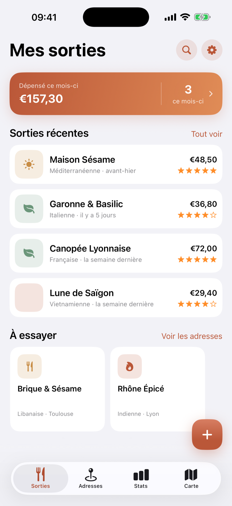
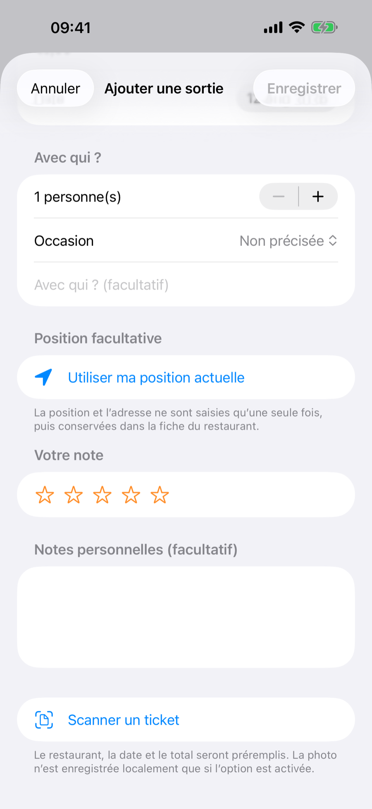
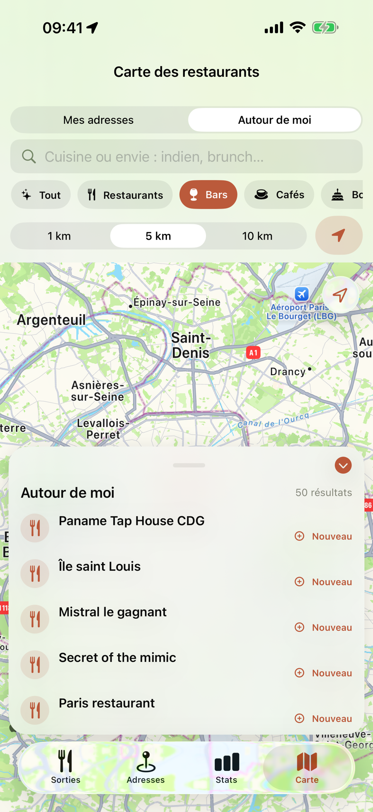
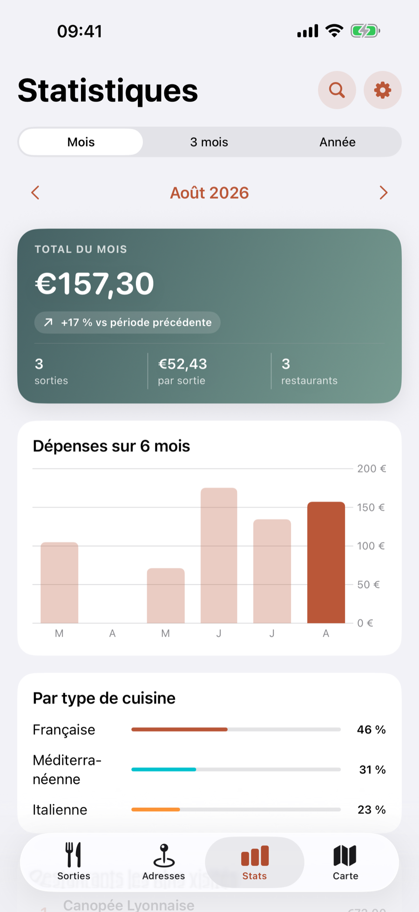

Le carnet de restaurants pensé pour l’iPhone
Vos bonnes tables.
Jamais oubliées.
Une seule app pour enregistrer vos sorties, retrouver une adresse, scanner un ticket et savoir où vous avez vraiment aimé manger.
- Sans compte
- Sans publicité
- Achat unique
SORTIES · ADRESSES · ENVIES

Adresse retrouvéeÀ moins d’1 km
Invité ?La sortie peut rester à 0 €
Concrètement
Moins de saisie.
Plus de bons souvenirs.
Mes Sorties Resto relie chaque visite à une vraie fiche restaurant. Vous ne faites pas deux fois le même travail.
1PENDANT OU APRÈS LA SORTIE
Enregistrez l’essentiel
Restaurant, montant, date et note. Ajoutez des compagnons, une occasion ou un commentaire uniquement si vous en avez envie.
2L’APP VOUS FAIT GAGNER DU TEMPS
L’adresse suit automatiquement
Choisissez un restaurant habituel ou laissez l’app proposer les adresses les plus proches. La nouvelle fiche rejoint votre carnet, sans doublon.
3QUAND VOUS EN AVEZ BESOIN
Retrouvez et partagez
Recherchez par ville, cuisine, note ou période. Partagez le nom et l’adresse, affichez le lieu sur la carte ou lancez l’itinéraire.
01

Scan de ticket
Photographiez.
L’app prépare la sortie.
Le nom, la date et le montant sont lus sur l’iPhone. Vous vérifiez chaque information avant d’enregistrer — et une seule photo suffit.
- ✓Détection automatique, sans rafale de photos
- ✓Informations toujours modifiables
- ✓Photo conservée seulement si vous le souhaitez
Nouveau · Autour de moi
Une envie précise ?
Regardez autour.
La carte ne se contente plus d’afficher des points. Cherchez ce qui correspond vraiment au moment : un bar, un café, une boulangerie ou une cuisine particulière.
RestaurantsBarsCafésBoulangeries
1, 5 ou 10 kmChoisissez le rayon
Itinéraire directPartez avec Plans
À essayerGardez l’adresse pour plus tard

AUTOUR DE MOI
3 bars à proximité
Dans un rayon de 5 km
●
●
Les détails qui changent tout
Plus rapide à utiliser.
Encore plus simple à corriger.
Notez sans ouvrir la fiche
Balayez la sortie vers la droite ou maintenez votre doigt dessus. Les cinq étoiles apparaissent immédiatement.
Vos habituels, à portée de pouce
Les lieux fréquents sont proposés en premier. Ouvrez ou réduisez la liste pour garder un formulaire compact.
Une erreur se corrige en un geste
Effacez séparément le nom, la cuisine, l’adresse ou la ville — ou repartez d’un formulaire propre.
Votre carnet devient utile
Les souvenirs d’un côté.
Les chiffres de l’autre.
Voyez ce que vous dépensez, les cuisines que vous choisissez et les restaurants où vous revenez. Au mois, sur trois mois ou sur l’année.
Mois3 moisAnnée
Une sortie où vous avez été invité reste dans votre historique, même avec un montant de 0 €.

CE MOIS-CI157,30 €3 sorties · 3 restaurants
Tout reste relié
Votre mémoire des restaurants.
Dans votre poche.
Bonnes adresses
Fiches, cuisine, photos, favoris, partage et itinéraire au même endroit.
À essayer
Gardez les tables qui vous font envie avant qu’elles disparaissent dans vos messages.
Partage simple
Envoyez le nom, l’adresse et le type de cuisine à vos amis.
Historique maîtrisé
Modifiez une sortie, notez-la rapidement ou supprimez-la avec les gestes natifs d’iOS.
Pas d’abonnement
Essayez gratuitement.
Gardez-la pour 9,99 €.
L’app se télécharge gratuitement. La Version complète se débloque ensuite par un seul achat, pour toujours.
Sans compteSans publicitéSans suivi
Pour découvrir
Gratuit
0 €- 10 sorties
- 10 adresses
- 5 lieux « À essayer »
- 2 scans de ticket
- Sauvegarde complète
Pour en profiter sans limite
Version complète
9,99 €une seule fois
- Sorties, adresses et envies illimitées
- Scans de ticket illimités
- Statistiques avancées
- Recherche « Autour de moi »
- Rapports PDF
Questions fréquentes
Avant de passer
à table.
Mes données sont-elles envoyées ailleurs ?＋
Non. Vos sorties, notes, dépenses, adresses et photos restent sur votre iPhone. Aucun compte n’est nécessaire.
Puis-je enregistrer une sortie à 0 € ?＋
Oui. Si vous avez été invité, la sortie reste bien dans votre historique sans fausser votre budget.
La recherche automatique d’adresse est-elle obligatoire ?＋
Non. Vous choisissez pendant l’onboarding si vous souhaitez l’activer, et ce réglage reste modifiable ensuite.
La Version complète est-elle un abonnement ?＋
Non. C’est un achat unique de 9,99 €, sans paiement mensuel ni annuel.
Sur quels appareils l’app fonctionne-t-elle ?＋
Mes Sorties Resto est conçue pour l’iPhone et compatible à partir d’iOS 18.
Bientôt sur l’App Store
La prochaine bonne adresse
commence ici.
Téléchargement gratuit sur iPhone. Version complète disponible ensuite en achat unique.
●
Bientôt disponible surl’App Store